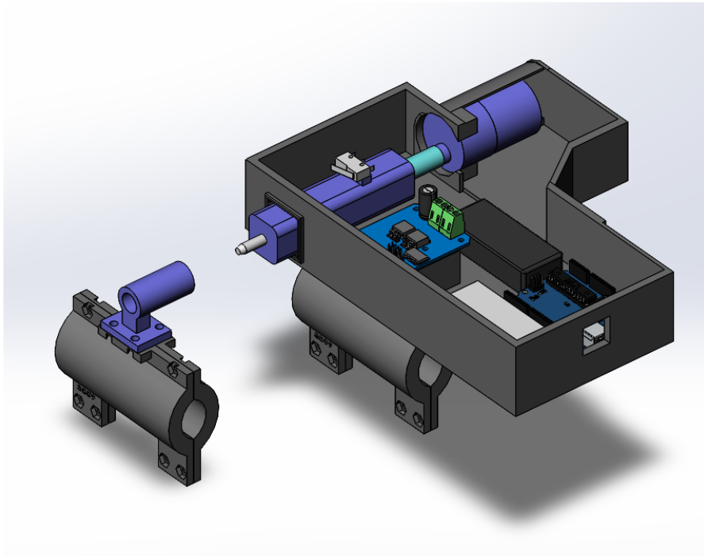
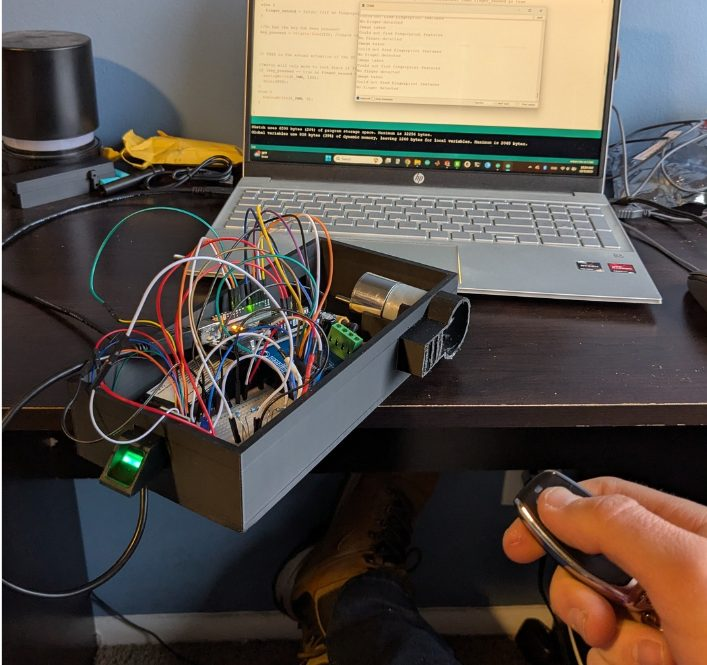
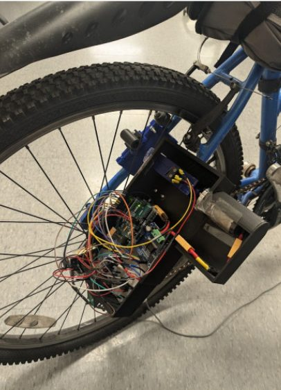

Mechatronics · Built
Biometric Bike Lock
- Arduino Uno
- SolidWorks
- Fingerprint sensor
- Bluetooth
- 3D printing
- Soldering

Overview
A bike lock that only unlocks for the right fingerprint and the right key fob. A DC motor driving a worm gear moves a locking pin through the wheel spokes, and the lock runs on an Arduino Uno that reports its state to a computer over Bluetooth.
How it works
The lock actuates when the correct fingerprint is sensed, followed by a button press. A fingerprint sensor reads the user; the lock then engages or releases once its receiver detects the correct frequency from a paired key fob.
A DC motor drives a worm gear that moves the locking pin through the wheel spokes.
Design and build
I designed the lock housing and mechanism in SolidWorks, 3D-printed all of the parts, and hand-soldered the sensor and actuator connections. The lock runs on an Arduino Uno, with its lock state communicated back to a computer over Bluetooth.



Results
The lock worked reliably. The weak point was the Bluetooth module, which didn't connect to my laptop reliably; a better module would fix that.
Taking it to a product
- Sturdier housing: replace the 3D-printed box with something more stable, like sheet metal or aluminum.
- Waterproofing: seal the housing to protect the electronics.
- Drop the fingerprint sensor: it's a cool feature, but it makes the lock much harder to use day to day.